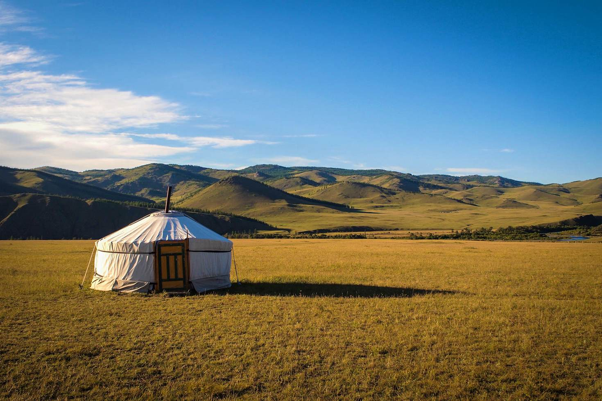
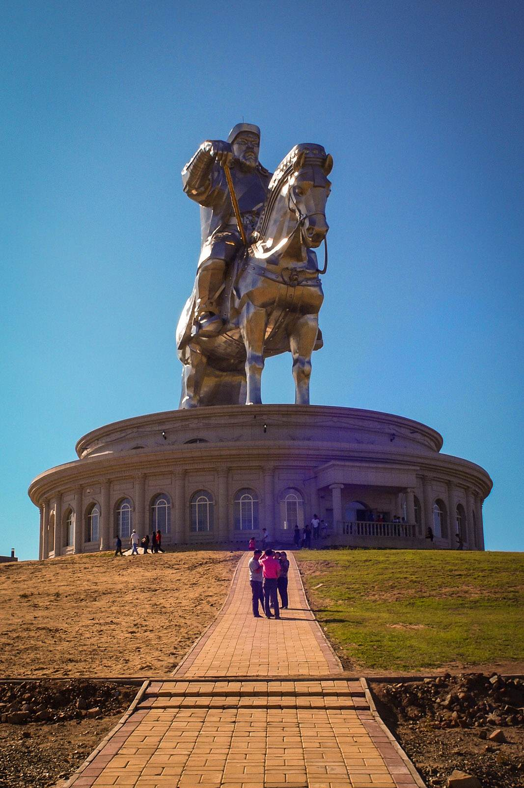
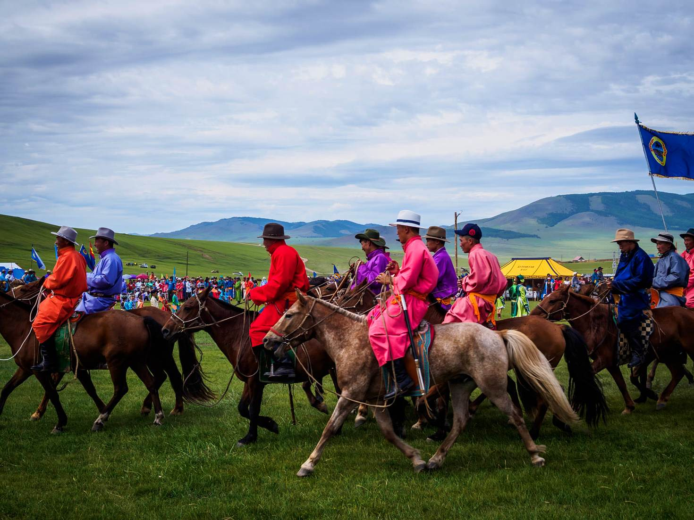
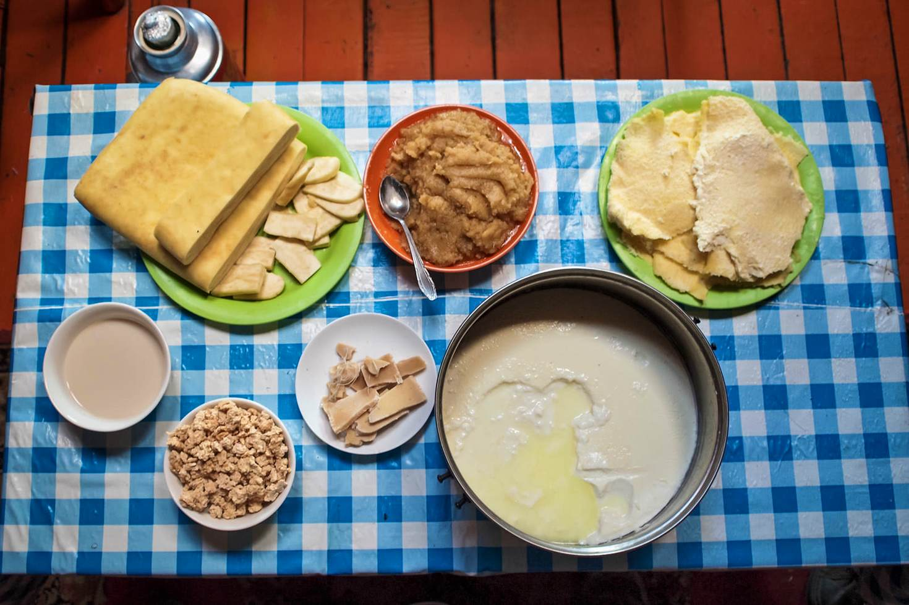
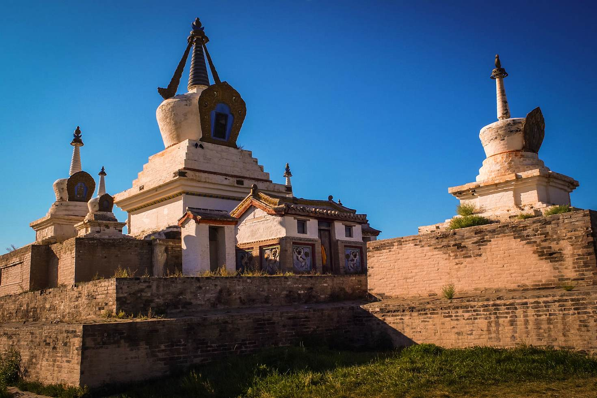

Travel and Tourism
One of the last surviving nomadic societies, half of Mongolians live pastoral lifestyles little-changed since the days of Chinggis Khan. The rest mostly live in Ulaanbaatar, their ties to the grassland fading as Mongolia’s only city, enriched by overseas investment, hurtles into the 21st century. Change is in the air, which is why now is the time to visit.
Space. Glorious, mesmerising, limitless space. One of the least densely populated countries on earth, Mongolia is where the gods play golf. Endless fairways of treeless green, patterned by the shadows of clouds; lakes for water hazards; pristine air; epic silence – there is a reason that Mongolians refer to their homeland as the 'land of the blue sky'. Occasionally the scene is tweaked by a lonely ger (yurt) of white felt: the portable homes of Mongolia’s pastoralists dot the country's vast landscape. And when night falls, the stars come out to play. The Milky Way's billions of stars appear so close and clear it seems like you could sweep them up in your hands.
Branded an imperialist during Soviet rule, Mongolia's fiercest warrior is now a brand in his own right, adorning energy drinks, cigars, vodka and hotels. You might spot Chinggis Khan carved 60 metres high into the hills surrounding Ulaanbaatar as you touch down at the great ruler's namesake airport. Near Nalaikh, a giant silver statue of the Great Khan can be seen shimmering from miles off. In fact, little is known about the ruler rumoured to lie buried somewhere secret in Khentii, a protected wilderness area. His tented capital, Karakorum, is long vanished, a pair of lonely stele markers at today's Kharkhorin the only trace. For a man who founded an empire stretching from Asia to Venice, the Great Khan left almost no physical legacy.
Boodog is an ancient steppe cooking technique still used today when herdsmen find themselves far from home. An animal – usually a marmot – is sliced open and stuffed with river stones heated on a fire, creating a primeval pressure cooker (they have been known to explode on occasion). The fur is then singed off and the meat carved up to eat. If you’re lucky you might get treated to this, ahem, delicacy as the morning sun warms your ger. It’s the preserve of men, which is hardly surprising – there’s no washing-up. A posher version is the khorkhog – a goat cooked with hot stones inside a milk churn.
Eurasia was terrorised by the prowess and potency of the Mongols 800 years ago, and their skills are by no means consigned to history. Every summer, Mongolians congregate for Naadam festivals to compete in the ‘three manly sports’: horse-riding, wrestling and archery. Children under ten race horses across 20km courses; wrestlers of all sizes hulk it out (Chinggis Khan believed it a way to keep his soldiers battle-ready); archers pierce targets with deadly accuracy. The biggest Naadam festival is held every July at the National Stadium in Ulaanbaatar, but the remote rural contests are the true bastions of grassland tradition.
Originally a sort of mobile yurt monastery, Ulaanbaatar has become Mongolia’s only true city. Best visited during the brief summer season, it has a curious, weather-worn appeal – a muddle of crumbling Soviet-era apartments, ger ghettos and shiny Chinese-built high-rises. Recently, a cafe culture has taken hold, complemented by some excellent restaurants, cashmere fashions, a monument to the Beatles, and, oddly, one of the finest LEGO shops outside Denmark. Culturally, the ramshackle Choijin Lama Temple presents gruesome murals of Buddhist hell, while at the State Youth & Children's Theatre, the Tumen Ekh ensemble specialises in the stirring art of throat-singing, the epic ‘long song’, shamanist dancing and contortionism.
You can eat everything from Asian fusion to KFC in Ulaanbaatar, but outside the capital, the flesh (and milk) of the sheep and goat are staples. After a summer ‘white season’ of mostly dairy foods, Mongolians quench their ‘meat hunger’ with mutton – boiled, fried or cooked in dumplings called buuz or pastries known as khuushuur. Milk is heated to make a clotted cream called orom, spread thick and yellow over slabs of Russian bread, and made into cheese curds called as aaruul, like rock-hard, lemony gobstoppers.
Sleeping in a rough-and-ready Mongolian ger is a quintessential grassland experience, but a growing number of tour operators are establishing sustainable, nomad-run ger camps that target the posh adventurer with innovative luxuries. Nomadic Journeys operates ger camps at pristine wilderness sites that feature heated eco-showers, hand-painted beds with thick yak’s wool blankets, and even a sauna ger. For the truly adventurous, they’ll open up an airstrip and fly people into the great Mongolian void – 365 degrees of pristine emptiness, and it’s all yours.
The Erdene Zuu Khiid monastery, Mongolia's most important Buddhist site (Buddhism came to Mongolia via Nepal and China), was constructed out of the rubble of Chinggis Khan’s capital, Karakorum. But the country’s far older shamanistic tradition reveals itself on crags and hilltops –heaps of stones called ovoos are laced with horse skulls and strips of blue cloth, the colour symbolising sky worship. A few days on the steppe and you start to understand: the green grassland is a constant – it’s the ever-changing ‘eternal blue sky’, with its puffy banks of buffeting clouds, rain, wind and azure stillness, that lends form to every vista.
In Ulaanbaatar’s sleepy Museum of Natural History, an enormous pair of fossilised arms, tipped by 30cm hooked claws, hang from the wall. ‘Terrible Hand’, the monster these limbs belonged to, was until recently the great unsolved mystery of palaeontology. The arms were unearthed in the 1960s in Mongolia’s southern Gobi Desert; they didn’t find a complete body until 2014. Most of the world’s best dino finds have come from the Gobi, and several tour operators visit dig sites including the Flaming Cliffs at Bayanzag, where dinosaur eggs were first found in the 1920s.
In the countryside, little girls in frilly dresses sit by the roadside hawking plastic bottles of airag – horse’s milk left to ferment outside a ger in a leather bag until it becomes alcoholic. Lip-puckeringly sour, it’s an acquired taste, but the locals live by it. Airag is the tonic of weddings, funerals, and frankly any other excuse for a knees-up. One reason for producing airag is that the fermentation process reduces the high levels of lactose (a natural laxative) found in mare’s milk.